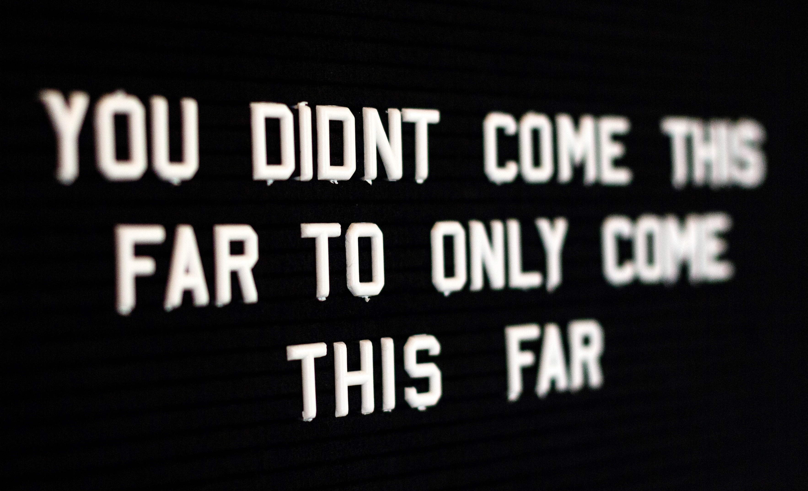
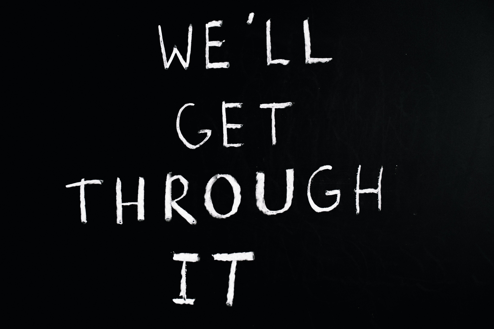

My Story
This is the story of son Krystopher Sansone. He is the reason I am so passionate about drug treatment programs in this country. You see, Krystopher died on February 10, 2013. He was only 17 years old. He died of an accidental overdose. His mother and I tried to get Krystopher into several drug treatment facilities, but finding the right facility, especially for adolescents, can be extremely difficult.
I am designing this website to help inform people that are interested in finding out whether a drug treatment facility is the best option for them, if they are ready to get clean and rid themselves of a painful addiction they might have. Drug treatment facilities are not "one size fits all". There are many different things to consider, when deciding which facility is the best option.
Statistics of drug abuse in the United States

According to the National Center for Drug Abuse Statistics:
50% of people age 12 and older have used illicit drugs at least once
Since 2000, over 700,000 people in the United States have died due to a drug overdose
$35 billion was the United States federal budget for drug control in 2020
Drug Overdose Death Statistics
Marijuana Addiction Statistics
Drug Rehab Options
Why Should Someone Get Help For Their Addiction?
According to the website Medscape, drug overdose is now the leading cause of injury-related deaths in the United States. In fact, the Center for Disease Control estimates that approximately 115 people die daily due to drug-related incidents.
Which Type of Drug Treatment Program Is Best?
Despite these statistics, only an estimated 10 percent of people get the drug treatment they need. And of those who do seek treatment, only a small percentage of them stay sober in the long term.
There are several options one can choose, when deciding which type of drug treatment program is right for them:
Inpatient Treatment
Inpatient drug rehab is an intensive form of treatment that lasts several weeks or months. Patients spend an average of 31 days at inpatient rehab and undergo intensive and daily treatment.
Residential Treatment
This form of drug rehab provides long-term treatment that lasts an average of two to three months. Many residential programs rely on peer counselors to help individuals get and stay sober.
Outpatient Programs
Outpatient treatment is less intensive than inpatient and residential drug rehab programs. Outpatient programs typically offer weekly therapy sessions as well as group counseling.
Medically Supervised Detox Programs
A detox program is often a necessary and important aspect of a person's recovery from addiction. Detox programs help people safely and effectively withdraw from drugs so they can begin treatment completely sober.